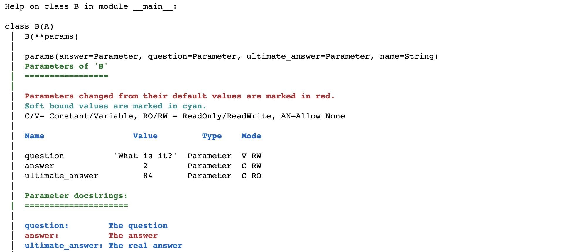

Parameters and Parameterized objects#
Fundamentally, what Param does is allow you to control how certain user-visible attributes (“parameters”) of a Python class or instance will behave when their value is get or set. A user of that class can set those attributes to control the class, but only if the mechanisms provided by Param and configured by the programmer allow it. In this way, Param allows the author of a class to implement and constrain what a user can do with that class or an instance of it, setting up a clear contract of what is and is not allowed, and how that attribute will behave. To do this, Param provides two main new types of Python object: Parameter objects, and Parameterized objects.
A parameter is a special kind of Python class attribute. Setting a Parameterized class attribute to be a Parameter instance causes that attribute of the class (and the class’s instances) to be treated as a parameter, not just an ordinary attribute. Parameters support special behavior, including dynamically generated parameter values, documentation strings, constant and read-only parameters, type or range checking at assignment time, and values dependent on those of other parameters.
More concretely, a Python Parameter object inherits from param.Parameter and stores various metadata attributes describing how a corresponding Python attribute of a Parameterized object should behave. By convention, we will use a capital ‘P’ Parameter to refer to the Parameter object itself, and a lower-case ‘p’ parameter to refer to the Python attribute it controls (i.e., the Parameter’s “value”).
A Parameterized class is a Python class that inherits from param.Parameterized and can accept Parameter objects as class attributes. A Parameterized class or instance uses the Parameter objects to determine how the corresponding attribute should behave.
There are many specific types of Parameter with different behavior, discussed in Parameter Types, but here we will cover the common behavior between all Parameter types when used in a Parameterized object.
Parameter metadata#
Each Parameter type can define additional behavior and associated metadata, but the metadata supported for all Parameter types includes:
default: Default value for this parameter at the class level, which will also be the value at the Parameterized instance level if it hasn’t been set separately on the instance.
name: String name of this parameter, which is typically determined by the attribute name of this Parameter in the owning Parameterized object, and is not set directly by a programmer.
label: Optional long name used for a verbose listing; defaults to the name.
allow_None: Whether this parameter accepts None as an allowed value, in addition to whatever other types it accepts. Automatically set to True if the default value of this Parameter is None.
doc: Docstring describing this parameter, which can be used by automatic documentation systems.
constant: Parameter whose value can only be changed at the class level or in a Parameterized constructor. Once the Parameterized instance has been created, the value is constant except in the context of
with param.edit_constant(obj)(see below).readonly: Parameter whose value cannot be set by a user either on an instance or at the class level. Can still be changed inside a codebase by temporarily overriding this value, e.g. to report internal state.
instantiate: Whether to deepcopy the default value into a Parameterized instance when it is created. False by default for Parameter and most of its subtypes, but some Parameter types commonly used with mutable containers default to
instantiate=Trueto avoid interaction between separate Parameterized instances, and users can control this when declaring the Parameter (see below).per_instance: whether a separate Parameter instance will be created for every Parameterized instance created. Similar to
instantiate, but applies to the Parameter object rather than to its value.precedence: Optional numeric value controlling whether this parameter is visible in a listing and if so in what order.
allow_refs: Whether to allow the Parameter to accept references to other Parameters that will be dynamically resolved.
nested_refs: Whether references should be resolved even when they are nested inside a container.
Most of these settings (apart from name) are accepted as keyword arguments to the Parameter’s constructor, with default mostly also accepted as the only positional argument:
import param
from param import Parameter, Parameterized
p = Parameter(default=42, doc="The answer", constant=True)
p.default
42
p.allow_None
False
p.doc
'The answer'
Parameter objects and instances#
In most cases, a Parameter will not be declared on its own as above; the Parameter object by itself is little more than a container for the metadata above. Until it is put into a class, most of those declarations are not meaningful, because what the Parameter object does is to specify how the corresponding Python attribute of that class should be handled. For example, we can define a Parameterized class with a couple of Parameter objects, and we’ll then be able to access the corresponding attributes of that class:
class A(Parameterized):
question = Parameter("What is it?", doc="The question")
answer = Parameter(default=2, constant=True, doc="The answer")
ultimate_answer = Parameter(default=42, readonly=True, doc="The real answer")
a = A(question="How is it?", answer="6")
Here, we created a Parameterized class A, with parameters question and answer, each with default values. We then instantiated a Python object a of type A. Without having to write a constructor for A, we were able to provide our own values for question and answer, while inheriting the default value of ultimate_answer. This approach gives a lot of (but not too much!) configurability to the user of this class, without much effort by the class author. Any values we provide at instantiation need to be allowed by the Parameter declaration; e.g. here we could not provide a value for ultimate_answer when declaring a, because that parameter is declared read only:
with param.exceptions_summarized():
A(ultimate_answer="no")
TypeError: Read-only parameter 'ultimate_answer' cannot be modified
Now that we have a Parameterized instance a, we can access the attributes we defined just as if they were normal Python instance attributes, and we’ll get the values we provided:
a.question
'How is it?'
a.answer
'6'
Meanwhile, the Parameterized class A (not the instance a) still has the default values, accessible as class attributes and used for any future objects instantiated of type A:
A.question
'What is it?'
A.answer
2
b = A()
b.answer
2
If accessing the attribute always gives us a value whether on the instance or the class, what happened to the Parameter objects? They are stored on the Parameterized instance or class, and are accessible via a special param accessor object at either the instance or class levels, via attribute or key:
a.param['question']
<param.parameterized.Parameter at 0x7f69c8d22ac0>
a.param.question
<param.parameterized.Parameter at 0x7f69c8d22ac0>
a.param.question.name
'question'
a.param.question.default
'What is it?'
A.param.question.default
'What is it?'
Once the Parameterized instance is created, the attributes can continue to be modified on it as often as you like, as long as the value is allowed by the Parameter object involved. E.g. question can still be changed, while answer is constant and cannot be changed after the Parameterized object has been instantiated:
with param.exceptions_summarized():
a.question = True
a.answer = 5
TypeError: Constant parameter 'answer' cannot be modified
a.question
True
Note that if for some reason you do need to change the value of a constant parameter (typically inside of your Parameterized object’s own code), you can do so using the param.edit_constant context manager:
with param.edit_constant(a):
a.answer = 30
a.answer
30
In most cases, the only time you need to worry about the difference between a Parameter and a regular Python attribute is when you first declare it; after that it will sit there happily behaving as instructed, noticeable only when a user attempts something the declarer of that Parameter has not allowed. You can safely leave the various metadata items at their defaults most of the time, but they are all there for when your particular application requires a certain behavior.
Parameter inheritance#
Parameter objects and their metadata are inherited in a hierarchy of Parameterized objects. Let’s see how that works:
class A(Parameterized):
question = Parameter("What is it?", doc="The question")
answer = Parameter(default=2, constant=True, doc="The answer")
ultimate_answer = Parameter(default=42, readonly=True, doc="The real answer")
class B(A):
ultimate_answer = Parameter(default=84)
b = B()
b.question
'What is it?'
A.question = "How are you?"
b.question
'How are you?'
Here you can see that B inherits question from A, and as long as question has not been set explicitly on b, b.question will report the value from where that Parameter was defined, i.e. A in this case. If question is subsequently set on b, b.question will no longer be affected by the value in A:
b.question = "Why?"
A.question = "Who?"
b.question
'Why?'
As you can see, parameters not specified in B are still fully usable in it, if they were declared in a superclass. Metadata associated with that parameter is also inherited, if not explicitly overidden in B.
b.param.ultimate_answer.constant
False
b.param.ultimate_answer.readonly
True
b.ultimate_answer
84
b.param.ultimate_answer.default
84
b.param.ultimate_answer.doc
'The real answer'
Looking at the metadata values of ultimate_answer on b or B you can see that:
All the default metadata values like
constant,allow_none, …, were inherited from the baseParameterobject provided by ParamThe
read_onlyanddocmetadata values were inherited fromAThe
defaultmetadata value ofultimate_answerinBoverrode the value provided inA.
Parameter inheritance like this lets you (a) use a parameter in many subclasses without having to define it more than once, and (b) control the value of that parameter conveniently across the entire set of subclasses and instances, as long as that attribute has not been set on those objects already. Using inheritance in this way is a very convenient mechanism for setting default values and other “global” parameters, whether before a program starts executing or during it.
help(b) or help(B) will list all parameters. You can also prefix or suffix a Parameterized object with ? in an IPython console/Notebook to display the help:
B?

Parameter value instantiation#
So much of the parameter metadata is there to help you control whether and how the parameter value is instantiated on Parameterized objects as they are created or new Parameterized subclasses as they are defined. Depending on how you want to use that Parameter and what values it might take, controlling instantiation can be very important when mutable values are involved. While the default behavior shown above is appropriate for immutable attributes, what happens if the value (unlike Python strings) is mutable? Things get a lot more complex.
s = [1, 2, 3]
class C(Parameterized):
s1 = Parameter(s, doc="A sequence")
s2 = Parameter(s, doc="Another sequence")
c = C()
Here, both parameters s1 and s2 effectively point to the same underlying sequence s:
c.s1 is c.s2
True
s[1] *= 5
s
[1, 10, 3]
c.s1
[1, 10, 3]
c.s1[2] = 'a'
c.s1
[1, 10, 'a']
c.s2
[1, 10, 'a']
As you can see, there is only one actual sequence here, and s, s1, and s2 all point to it. In some cases such behavior is desirable, e.g. if the mutable object is a specific global list (e.g. a set of search paths) with a unique identity and all of the parameters are meant to point to that specific item. In other cases, it’s the contents of the mutable item that are important, and no sharing of contents is intended. Luckily, Param supports that case as well, if you provide instantiate=True (default is False):
s = [1,2,3]
class D(Parameterized):
s1 = Parameter(default=s, doc="A sequence", instantiate=True)
s2 = Parameter(default=s, doc="Another sequence", instantiate=True)
d = D()
Now, parameters s1 and s2 point to their own copies of the sequence, independent of each other and of the original argument s:
d.s1 is d.s2
False
s *= 2
s
[1, 2, 3, 1, 2, 3]
d.s1
[1, 2, 3]
d.s1[2] = 'a'
d.s2
[1, 2, 3]
Of course, copying the data into each instance like that costs memory, and moreover prevents controlling all instances at once by setting a class attribute as we saw earlier, which is why instantiate is not True by default. As a rule of thumb, set instantiate=True if and only if (a) your Parameter can take mutable values, and (b) you want those values to be independent between Parameterized instances.
Parameter object instantiation#
instantiate controls how parameter values behave, but similar issues arise for Parameter objects, which offer similar control via the per_instance metadata declaration. per_instance (True by default) provides a logically distinct Parameter object for every Parameterized instance, allowing each such instance to have different metadata for that parameter. For example, we can set the label separately for each instance without clobbering each other:
d1 = D()
d2 = D()
d1.param.s1.label = "sequence 1"
d2.param.s1.label = "(sequence 1)"
d2.param.s1.label
'(sequence 1)'
d1.param.s1.label
'sequence 1'
This capability is useful for situations with dynamically updated metadata, e.g. if you need setting one parameter’s value (e.g. ‘Continent’) to change the allowed values of another parameter (e.g. ‘Country’). The underlying Parameter objects are copied lazily (only when actually changed), so that objects are not actually multiplied unless necessary. If you do want parameters to share a single Parameter object so that you can control its behavior globally, you can achieve that with per_instance=False, though the effects can be confusing in the same way as instantiate=True for mutable objects (above):
class E(Parameterized):
a = Parameter(default=3.14, label="pi", per_instance=False)
e1 = E()
e2 = E()
e2.param.a.label = "Pie"
e1.param.a.label
'Pie'
Displaying Parameterized objects#
Most of the important behavior of Parameterized is to do with instantiation, getting, and setting, as described above. Parameterized also provides a few public methods for creating string representations of the Parameterized object and its parameters:
Parameterized.__str__(): A concise, non-executable representation of the name and class of this objectParameterized.__repr__(): A representation of this object and its parameter values as if it were Python code calling the constructor (classname(parameter1=x,parameter2=y,...))Parameterize.param._repr_html_(): A rich HTML representation of the object with its parameters listed in a table together with their metadata.Parameterized.param.pprint(): Customizable, hierarchical pretty-printed representation of this Parameterized and (recursively) any of its parameters that are Parameterized objects. See Serialization and Persistence for details on customizingpprint.
import param
class Q(param.Parameterized):
a = param.Number(default=39, bounds=(0,50), doc='Number a')
b = param.String(default="str", doc='A string')
class P(Q):
c = param.ClassSelector(default=Q(), class_=Q, doc='An instance of Q')
e = param.ClassSelector(default=param.Parameterized(), class_=param.Parameterized, doc='A Parameterized instance')
f = param.Range(default=(0,1), doc='A range')
p = P(f=(2,3), c=P(f=(42,43)), name="demo")
p.__str__()
'<P demo>'
p.__repr__()
"P(a=39, b='str', c=P(a=39, b='str', c=Q(a=39, b='str', name='Q00034'), e=Parameterized(name='Parameterized00035'), f=(42, 43), name='P00033'), e=Parameterized(name='Parameterized00038'), f=(2, 3), name='demo')"
The HTML representation of a Parameterized instance or class is displayed when you call <obj>.param in a Notebook.
p.param
P()
| Name | Value | Type | Range | ||||||||||||||||||||||||||||||||||||||||||||||||||||
|---|---|---|---|---|---|---|---|---|---|---|---|---|---|---|---|---|---|---|---|---|---|---|---|---|---|---|---|---|---|---|---|---|---|---|---|---|---|---|---|---|---|---|---|---|---|---|---|---|---|---|---|---|---|---|---|
a | 39 | Number | >=0, <=50 | ||||||||||||||||||||||||||||||||||||||||||||||||||||
b | 'str' | String | |||||||||||||||||||||||||||||||||||||||||||||||||||||
c |
P()
| ClassSelector | Q | ||||||||||||||||||||||||||||||||||||||||||||||||||||
e |
Parameterized()
| ClassSelector | Parameterized | ||||||||||||||||||||||||||||||||||||||||||||||||||||
f | (2, 3) | Range | |||||||||||||||||||||||||||||||||||||||||||||||||||||
name | 'demo' | String | nullable constant |
P.param
P
| Name | Default | Type | Range | ||||||||||||||||
|---|---|---|---|---|---|---|---|---|---|---|---|---|---|---|---|---|---|---|---|
a | 39 | Number | >=0, <=50 | ||||||||||||||||
b | 'str' | String | |||||||||||||||||
c |
Q()
| ClassSelector | Q | ||||||||||||||||
e |
Parameterized()
| ClassSelector | Parameterized | ||||||||||||||||
f | (0, 1) | Range | |||||||||||||||||
name | 'P' | String | nullable constant |
p.param.pprint(separator="\n")
"P(c=P(c=Q(), e=Parameterized(), f=(42,43)),\n e=Parameterized(),\n f=(2,3),\n name='demo')"
Notice that in the case of a circular reference (p.c = P(c=p)) the representation will show an ellipsis (...) rather than recursively printing the subobject:
p.c=P(c=p)
p.param.pprint()
"P(c=P(c=..., e=Parameterized()), e=Parameterized(), f=(2,3), name='demo')"
Parameterized namespace#
Param allows you to create Parameterized objects by inheriting from the Parameterized base class. Param has evolved over time to reduce its footprint and reserve as few as possible attributes on this namespace, to reduce the risk of name clashes and allow you to freely define your attribute names. Param reserves a few names that are described below, make sure not to override, unless it is stated it is allowed:
Public attributes:
name: Parameterized classes and instances have a nameStringParameter, that by default is set to the class name when accessed from the class and to the class name appended with a 5 digit when accessed from the instance. You can override this Parameter by your ownStringParameter if you need to.param: Property that helps keep the Parameterized namespace clean and disambiguate between Parameter objects and parameter values, it gives access to a namespace that offers various methods (see the section below) to update and inspect the Parameterized object at hand.
Private attributes:
_param__parameters: Store the object returned by.paramon the class_param__private: Store various internal data on Parameterized class and instances
class P(param.Parameterized):
a = param.Number()
b = param.String()
p = P()
print(f'{P.name=}, {p.name=}')
P.name='P', p.name='P00042'
def namespace(obj):
return [o for o in dir(obj) if not o.startswith('__')]
namespace(P)
['_param__parameters', '_param__private', 'a', 'b', 'name', 'param']
namespace(p)
['_param__parameters', '_param__private', 'a', 'b', 'name', 'param']
Other Parameterized methods#
Like .param.pprint, the remaining “utility” or convenience methods available for a Parameterized class or object are provided via the .param subobject:
.param.update(**kwargs): Set parameter values from the givenparam=valuekeyword arguments (or a dict or iterable), delaying watching and dependency handling until all have been updated..param.updatecan also be used as a context manager to temporarily set values, that are restored to their original values when the context manager exits.
p.param.update(a=0, b='start');
print(p.a, p.b)
0 start
with p.param.update(a=1, b='temp'):
print(f'In the context manager: {p.a=}, {p.b=}')
print(f'After the context manager exits: {p.a=}, {p.b=}')
In the context manager: p.a=1, p.b='temp'
After the context manager exits: p.a=0, p.b='start'
.param.values(onlychanged=False): A dict of name,value pairs for all parameters of this object
p.param.values()
{'a': 0, 'b': 'start', 'name': 'P00042'}
.param.objects(instance=True): Parameter objects of this instance or class
p.param.objects()
{'name': <param.parameterized.String at 0x7f69c8d90540>,
'a': <param.parameters.Number at 0x7f69c8ee9180>,
'b': <param.parameterized.String at 0x7f69c8d911c0>}
.param.add_parameter(param_name,param_obj): Dynamically add a new Parameter to this object’s class.param.get_value_generator(name): Returns the underlying value-generating callable for this parameter, or the underlying static value if none.param.force_new_dynamic_value(name): For a Dynamic parameter, generate a new value and return it.param.inspect_value(name): For a Dynamic parameter, return the current value of the named attribute without modifying it.
Specialized Parameter types#
As you can see above, a Parameter provides a lot of power already on its own, but in practice you will want to use much more specific parameter types that reject invalid inputs and keep your code clean and simple. A specialized Parameter acts as a “contract” with the users of the code you write, declaring and defending precisely what configuration is allowed and how to achieve it. If you need to accept specific inputs like that but don’t add an appropriate Parameter type, you’ll be stuck adding exceptions and validation code throughout your codebase, whereas anything you can express at the Parameter level will be enforced automatically without any further checks or code.
For instance, what if you want to accept a numeric parameter, but (for some reason) can only accept numbers that are even integers? You’ll need a custom Parameter class to express a restriction like that. In this case you can do it by overriding the _validate_value method of the Parameter class:
import numbers
class EvenInteger(param.Parameter):
"""Integer Parameter that must be even"""
def _validate_value(self, val, allow_None):
super()._validate_value(val, allow_None)
if not isinstance(val, numbers.Number):
raise ValueError(
f"EvenInteger parameter {self.name!r} must be a number, not {val!r}."
)
if not (val % 2 == 0):
raise ValueError(
f"EvenInteger parameter {self.name!r} must be even, not {val!r}."
)
class P(param.Parameterized):
n = param.Number()
b = EvenInteger()
p=P()
P(n=5, b=4)
P(b=4, n=5, name='P00003')
P(b=4, n=5, name='P00003')
with param.exceptions_summarized():
P(n=5, b="four")
ValueError: EvenInteger parameter 'b' must be a number, not 'four'.
with param.exceptions_summarized():
P(n=5, b=5)
ValueError: EvenInteger parameter 'b' must be even, not 5.
Luckily, you don’t often need to write a custom Parameter class like this, because the most common cases are already provided in Param, as listed in the Parameter Types manual. If you need something more specific than the existing types, start with the one that comes closest to restricting its value to the desired set of values without excluding any allowable values. In this case all integer powers of 2 are also integers, so you’d start with param.Integer rather than param.Parameterized as above. You can then make a new subclass and add validation as above to further restrict the values to precisely what you allow. Here if you inherited from param.Integer you would no longer need to check if the input is a number, as param.Integer already does that as long as you call super as above. Your custom type can override any aspects of the Parameter if needed, e.g. to accept different items in the constructor, store additional data, add additional constraints, and so on. The existing Parameter types in param/__init__.py act as a rich source of examples for you to start with and crib from.